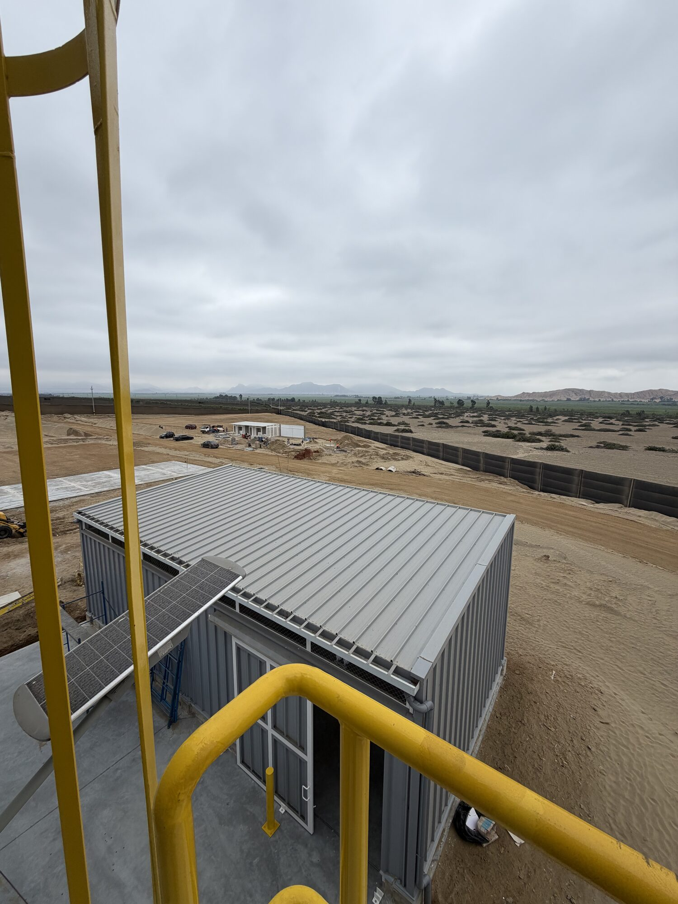
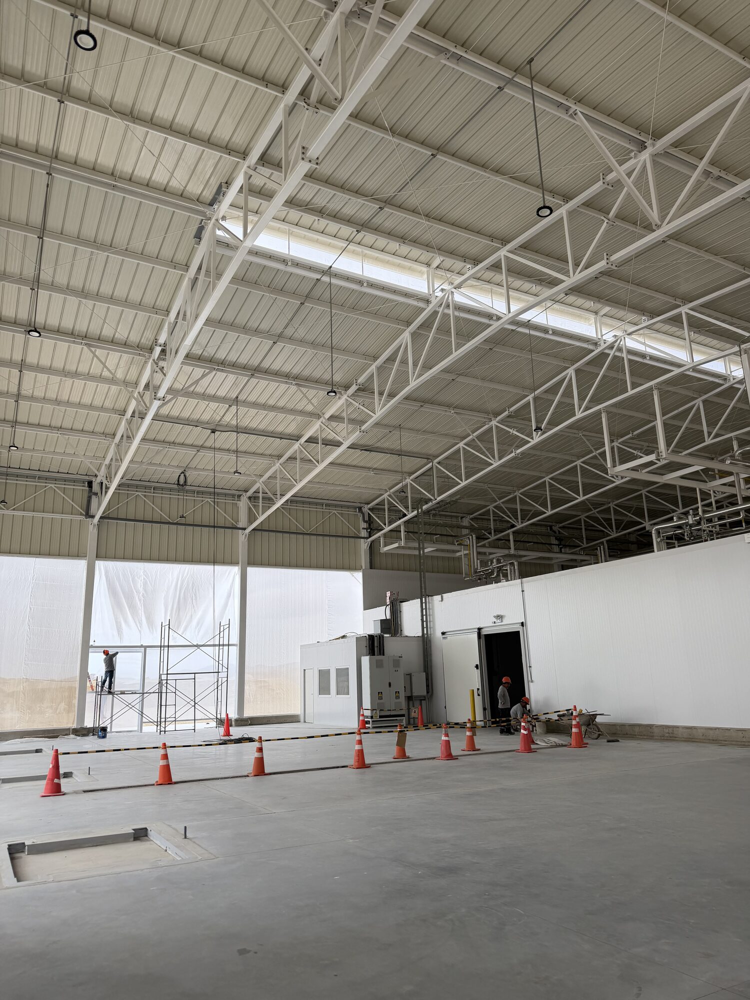
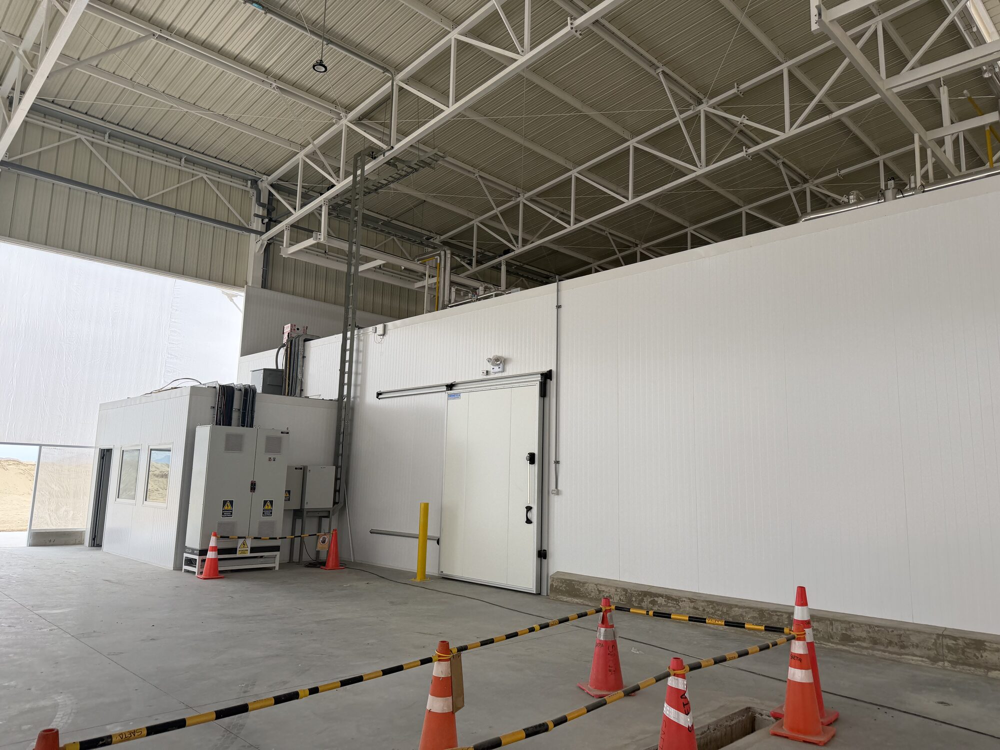
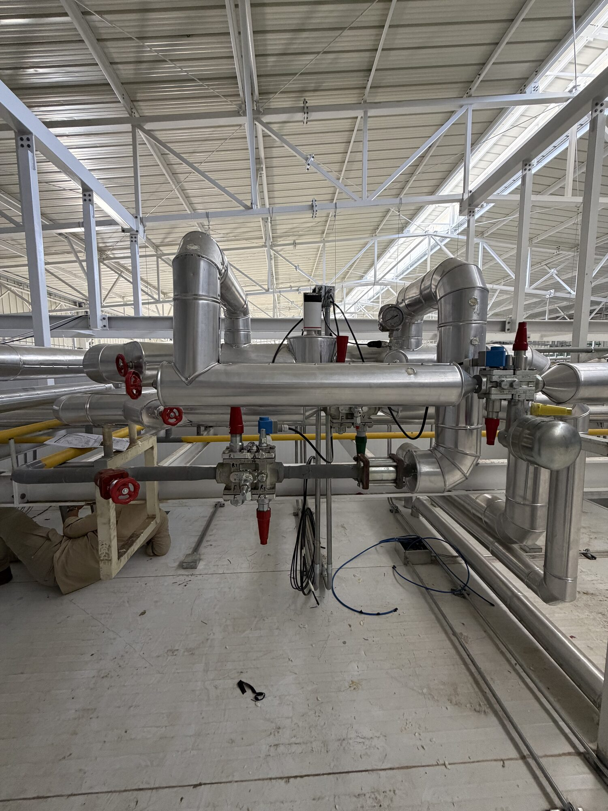
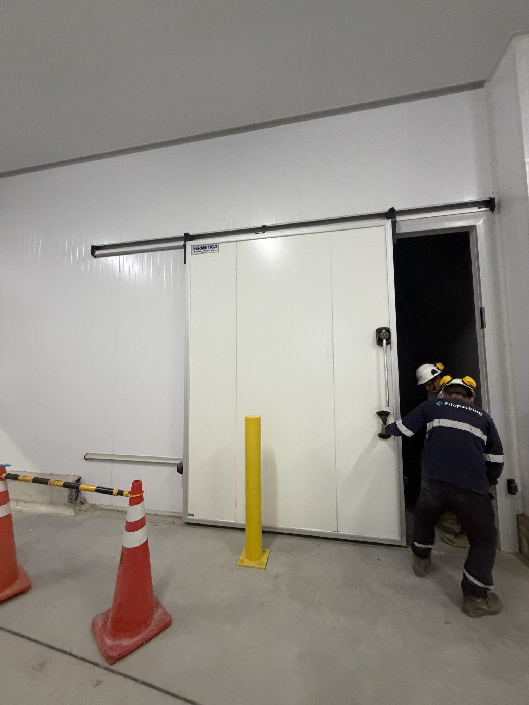
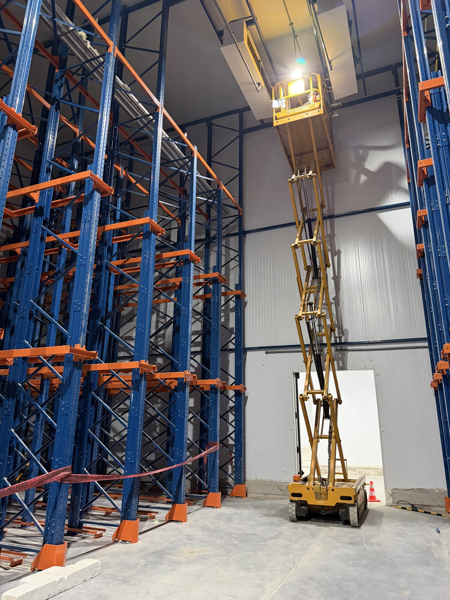
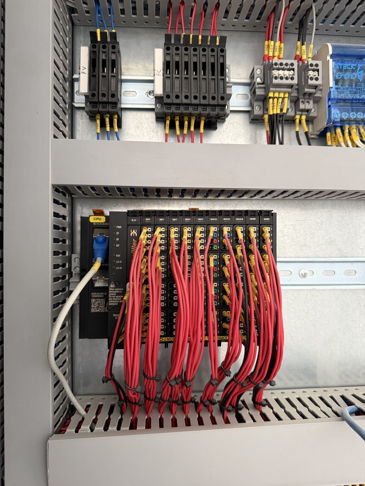
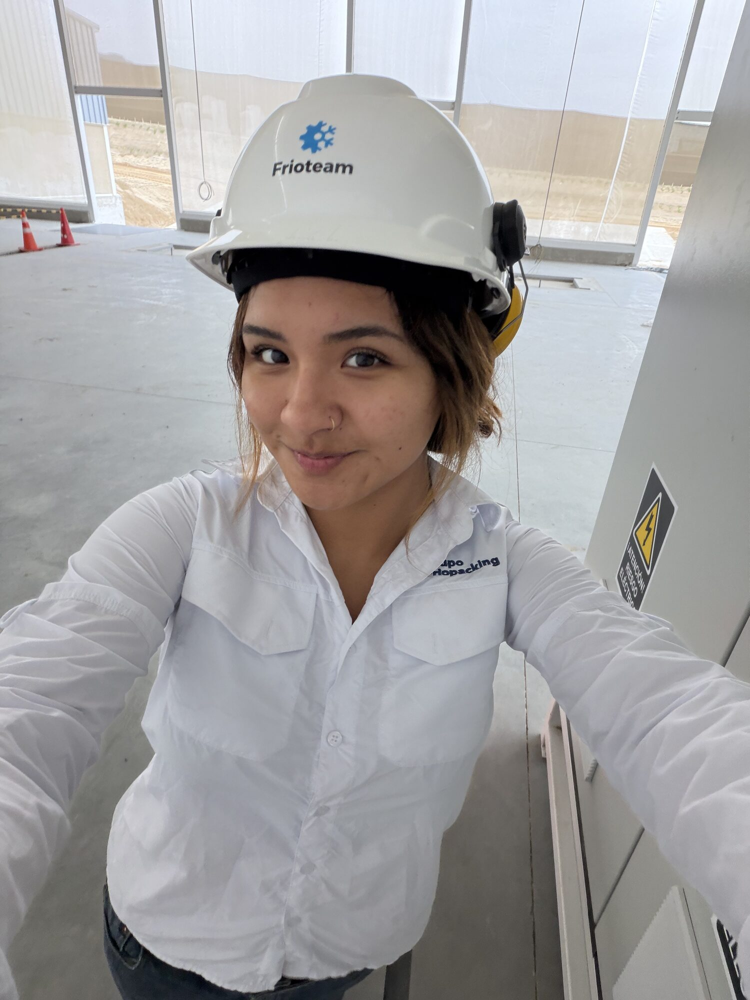

Reporte Semanal · 06 · En curso
Semana 6 en obra
Mi primera experiencia en obra
Esta semana viví mi primera experiencia en obra durante la puesta en marcha del proyecto Qberries en Trujillo. Pude conectar los planos, presupuestos y modelos que había estudiado anteriormente con la ejecución real de una planta frigorífica.
Ver reporte
Sobre mí
Quién soy
Laura Rojas
Soy estudiante de último año de Ingeniería Biomédica en Boston University, con una concentración en Innovación Tecnológica. Crecí en Perú y he vivido más de diez años en Estados Unidos, lo que me ha permitido desarrollar una perspectiva global sobre ingeniería, innovación y negocios.
Trayectoria del practicum
Rotación de áreas
Después de aprender cómo se diseña y presupuesta una planta, esta semana pude observar cómo esos planes se ejecutan y verifican en obra.
-
Semana 1
Introducción a FrioPacking y sus áreas
Completado
-
Semanas 2–3
Ingeniería Mecánica
Completado
-
Semanas 3–4
Arquitectura
Completado
-
Semanas 4–5
Presupuestos
Completado
-
Semana 5
Inicio en Operaciones
En curso
-
Semana 6
Obra y puesta en marcha en Trujillo
En curso
Resumen ejecutivo
La semana en cifras
5
Días en proyecto
1
Primera visita a obra
Qberries
Proyecto visitado
8
Fotografías integradas
Puesta en marcha
Etapa observada
Semana en obra
Actividades por día
Toca cada día para ver actividades, aprendizajes, reflexión y fotografías. Lunes está abierto como punto de partida.
LUN · 06/07 Primera visita a obra y puesta en marcha
Actividades
- Recorrido por los ambientes, túneles, compresores y evaporadores.
- Prueba individual de sensores de temperatura en los pallets.
- Revisión de conexiones con voltímetro y corrección de lecturas negativas.
- Observación de la limpieza de tecnopor cerca de los ventiladores.
- Seguimiento del vacío de tuberías y de las pruebas iniciales del compresor con amoníaco.
Aprendizajes
- La puesta en marcha requiere probar cada componente antes de operar la planta.
- El nitrógeno, el vacío y la carga de amoníaco forman parte de etapas diferentes de preparación y prueba.
- Un detalle pequeño en un sensor o conexión puede afectar la lectura del sistema.
Ver en persona los equipos y ambientes que anteriormente solo conocía mediante planos me ayudó a comprender cómo el trabajo de ingeniería se convierte finalmente en una instalación real.
Fotografías


MAR · 07/07 Aislamiento, coordinación y seguridad
Actividades
- Revisión de tuberías, válvulas, pintura e identificación.
- Observación de una tubería cuyo aislamiento debía rehacerse.
- Revisión de paneles, tornillos, sellado con Sikaflex y espacios pendientes.
- Identificación de una interferencia entre cables eléctricos y la instalación de una zeta.
- Acompañamiento al supervisor durante la documentación fotográfica de SSOMA.
Aprendizajes
- Un aislamiento no uniforme puede causar condensación, goteo y entrada de calor.
- El trabajo de un contratista puede afectar directamente el avance de otra especialidad.
- Las fotografías y registros diarios ayudan a evitar malentendidos y comprobar avances.
Aprendí que revisar una obra requiere atención a detalles que no siempre se aprecian en un plano y que documentar el avance es tan importante como ejecutar el trabajo.
Fotografías



MIÉ · 08/07 Valorizaciones y control de avances
Actividades
- Distribución de montos a lo largo de aproximadamente cinco valorizaciones.
- Revisión de precio, avance, montos pagados y saldos pendientes.
- Verificación de fórmulas que tomaban datos de filas incorrectas.
- Revisión del archivo con Fernando.
- Clasificación de fotografías según el ambiente de la planta.
Aprendizajes
- Un error en Excel puede afectar directamente el pago a un contratista.
- Las fórmulas deben revisarse individualmente, aunque el archivo parezca correcto.
- Los reportes semanales permiten relacionar el avance físico con la documentación.
Me gustó utilizar Excel en un proceso real y entender que una valorización no consiste solo en completar números, sino en verificar que el avance y los pagos tengan sentido.
01
Valorizaciones
02
30% de avance revisado
03
Fórmulas
04
Reportes fotográficos
JUE · 09/07 PLCs, tableros y válvulas
Actividades
- Observación de la interfaz del proyecto en la oficina y en obra.
- Transferencia de programación desde la laptop hacia los PLCs.
- Apertura de un tablero y colocación de una batería de respaldo.
- Revisión de cableado identificado y coordinación con contratistas eléctricos.
- Observación de válvulas y revisión de posibles fugas de amoníaco.
Aprendizajes
- Los PLCs deben comunicarse para que el sistema funcione de manera coordinada.
- La programación depende de que las conexiones eléctricas sean precisas.
- Mantener el cableado identificado facilita la revisión y corrección de errores.
- Las fugas deben identificarse antes de operar el sistema a plena capacidad.
Me sentí más involucrada porque me dieron la responsabilidad de abrir un tablero y cambiar la batería de respaldo de un PLC. Ver la electrónica aplicada también me ayudó a valorar más lo aprendido en la universidad.
Fotografías

VIE · 10/07 Comunicación entre tableros y cierre de la visita
Actividades
- Observación de la programación de diferentes tableros.
- Revisión de una extensión utilizada para mejorar la comunicación entre tableros.
- Recorrido por el ático para observar el avance de los contratistas.
- Verificación de protocolos de SSOMA con Fiorella.
- Avance del reporte semanal.
Aprendizajes
- La distancia puede afectar la comunicación y transmisión de señales entre tableros.
- Los avances y problemas deben comunicarse constantemente al supervisor.
- Respetar los plazos y actualizar al equipo ayuda a evitar retrasos y malentendidos.
Terminé la semana satisfecha y agradecida por la oportunidad de aprender con el equipo del proyecto Qberries. Esta primera obra me permitió observar el proceso desde la planificación hasta la ejecución.
Síntesis
Aprendizajes clave
Puesta en marcha
- Pruebas antes de operación.
- Verificación de sensores y equipos.
- Atención a detalles y seguridad.
Automatización
- Programación de PLCs.
- Comunicación entre tableros.
- Coordinación entre programación y electricidad.
Gestión de obra
- Valorizaciones.
- Reportes diarios.
- Seguimiento de avances y plazos.
Trabajo multidisciplinario
- FrioPacking.
- Frioteam.
- SSOMA.
- Contratistas.
Interacciones
Personas y equipos con los que trabajé
Fernando
Recorridos técnicos, valorizaciones y revisión de obra.
Christian
PLCs, programación y tableros eléctricos.
Fiorella
SSOMA y cumplimiento de protocolos.
Eddie
Pruebas de sensores de temperatura.
Equipo de FrioPacking y Frioteam
Puesta en marcha y coordinación del proyecto.
Boston University
De la universidad a la obra
Ver circuitos, conductores y sistemas de control aplicados en una planta real me ayudó a apreciar más temas que había estudiado en la universidad y que en su momento me parecieron complicados. Esta experiencia me mostró que los conceptos académicos adquieren mucho más sentido cuando puedo observar cómo se utilizan para controlar equipos, interpretar señales y resolver problemas reales.
Cierre de la semana
Reflexión final
Esta semana fue una de las experiencias más completas de mi práctica porque pude vivir por primera vez una obra durante su etapa de puesta en marcha. Conecté lo aprendido en planos, presupuestos y modelos con la ejecución real de una planta. También observé cómo la programación, las instalaciones eléctricas, las tuberías, la seguridad y la documentación deben avanzar de manera coordinada.
Me sentí más involucrada al participar en pruebas, valorizaciones, reportes y actividades dentro de los tableros eléctricos. El principal aprendizaje que me llevo de Trujillo es la importancia de comunicar los avances, documentar cada detalle y cumplir los plazos para evitar retrasos y malentendidos. Esta experiencia me permitió comprender mejor el recorrido completo de un proyecto, desde su planificación hasta su ejecución en obra.

Semana siguiente
Próximos pasos
01
Seguir aprendiendo sobre programación de PLCs.
02
Comprender mejor los componentes de los tableros eléctricos.
03
Continuar observando cómo se completa la puesta en marcha de una planta.